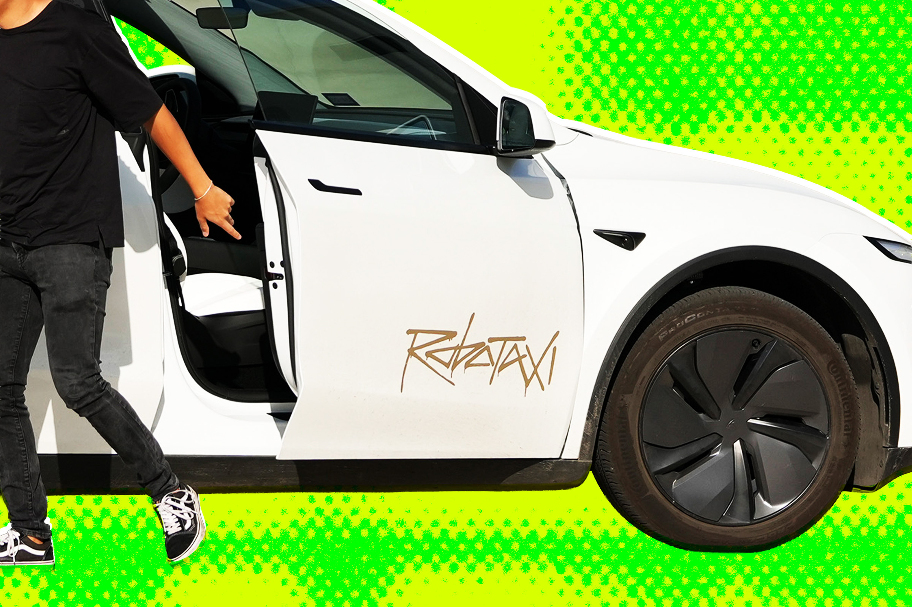

特斯拉在欧洲的处境原本就已举步维艰，如今又添新忧。交通安全研究人员称，他们发现特斯拉为了获得"全自动驾驶"（FSD）系统的监管批准，向相关部门提交了经过"加工"的交通事故数据。
据路透社率先披露，特斯拉向瑞典和荷兰当局提交的数据中，严重夸大了FSD在美国的安全记录。
在提交给瑞典监管机构的一份演示材料中，特斯拉政策经理伊万·科穆萨纳克（Ivan Komusanac）声称，在美国道路上，特斯拉FSD系统每发生一次碰撞所能行驶的距离，比人类驾驶员高出七倍以上。以此为基础，该演示材料进一步宣称，在某个不确定的时间段内，特斯拉FSD本可以挽救32,000条生命、避免190万起受伤事故。
然而，审阅过这些数据背后原始依据的独立研究人员表示，这些数字极具误导性。原因在于，特斯拉的推算假设了所有道路上的车辆——包括半挂卡车和摩托车——都被开启了FSD模式的特斯拉所取代。
荷兰政府道路交通服务机构RDW的监管官员告诉路透社，他们曾对特斯拉FSD模式进行过独立测试，但并未说明测试的具体内容，也未透露测试数据的结果。RDW已于今年4月批准特斯拉FSD在监督模式下部署，此后该机构已通知欧洲其他监管机构，计划在整个欧盟范围内推进FSD的审批。
欧洲交通安全委员会（ETSC）发言人达德利·柯蒂斯（Dudley Curtis）对路透社的评论可谓一针见血：如果特斯拉想要做出如此夸大的安全声明，它应该"把数据交给大学，让合格的研究人员进行独立验证，然后我们再谈。"
截至发稿，特斯拉未回应路透社的置评请求。
特斯拉在自动驾驶领域的宣传一直以大胆著称，从"全自动驾驶"这个名不副实的命名，到被多次质疑的安全数据呈现方式，争议始终不断。此次欧洲监管博弈中的数据"美化"指控，如果最终得到证实，可能会对特斯拉在全球范围内推动自动驾驶审批的进程产生深远影响。
值得注意的是，独立验证机制的缺失正成为行业监管的普遍痛点。正如欧洲交通安全委员会所言，在没有第三方独立核实的情况下，企业单方面宣称的安全数据究竟有多少可信度，值得每一位消费者和监管者深思。